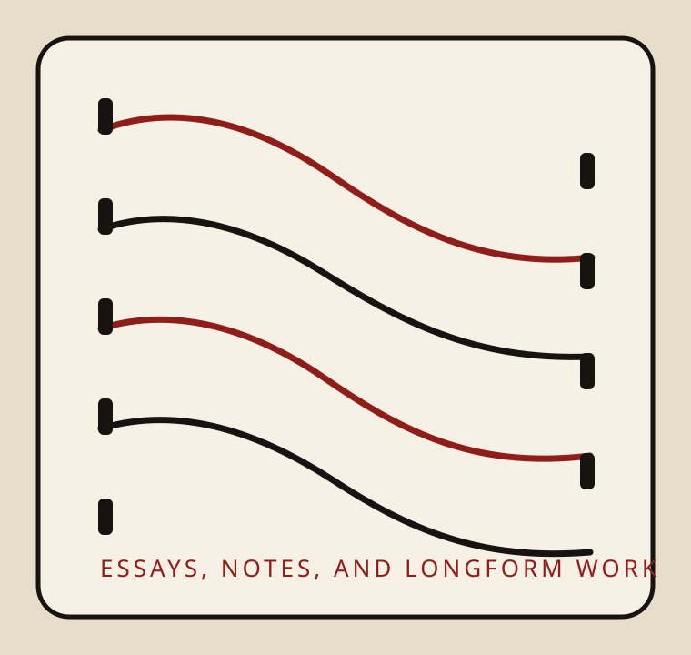

Walter K. and Frances M. Smith Memorial Scholarship Essay
PDF forthcomingA reflective essay focused on student involvement and the practical application of collegiate education within the University of Louisville community.
Writing
This page highlights writing directions already reflected in Natalie’s academic and editorial work. Selected PDFs can be attached as final drafts are ready.

Essay
A reflective essay focused on student involvement and the practical application of collegiate education within the University of Louisville community.
Professional persuasive writing developed to support outreach, promotional strategy, and funding requests for student-centered programming.
Creative Nonfiction
A novella-length creative nonfiction project developed through workshop practice, sustained drafting, and close revision.
Candid photo essays that pair writing, illustration, and wildlife photography for educational and literary audiences.